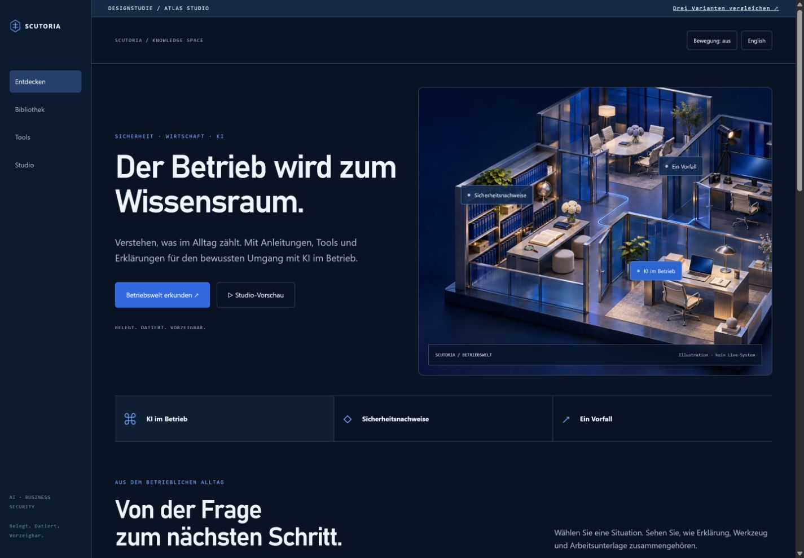
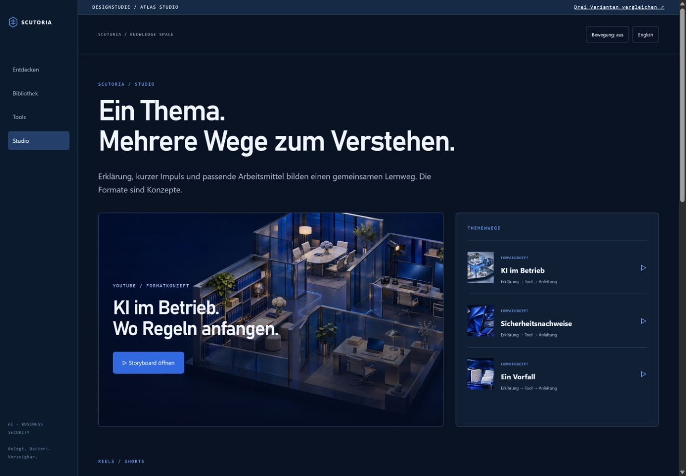

VARIANTE 01
Atlas Studio
Dunkle Betriebswelt mit seitlicher Navigation, anklickbaren Themen und integriertem Lernstudio. Die ausgewogenste Mischung.

Startseite oben · Studio unten
Weitere Vorlagen: Bibliothek, Produkt, Tools und Mobil.